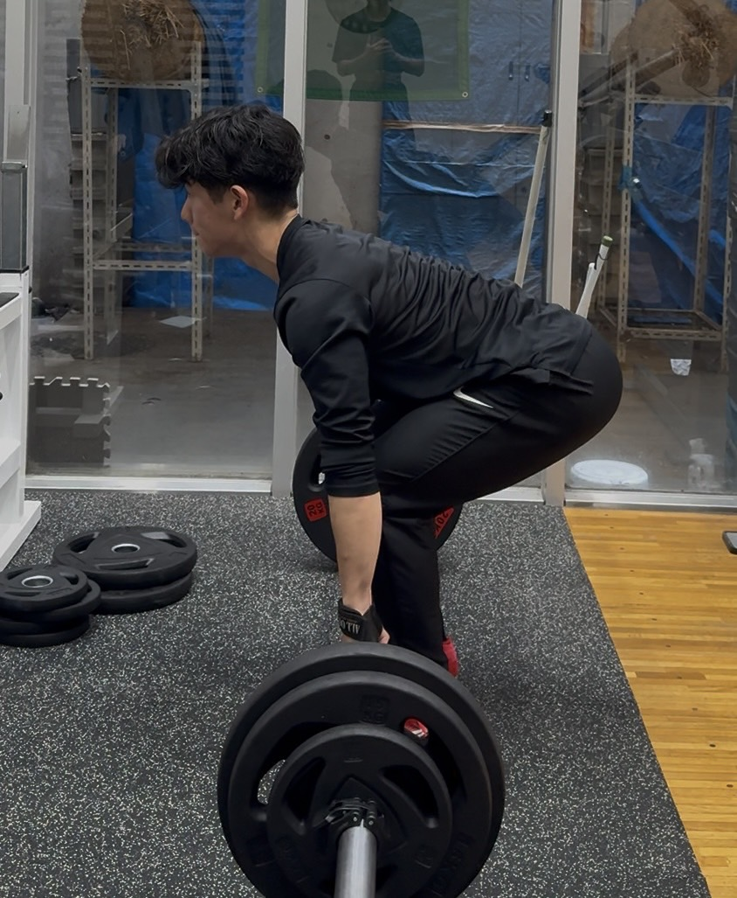
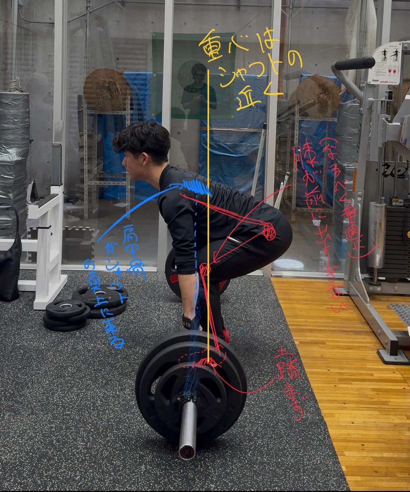

デッドリフトについて
文章、写真、動画で説明していきます。
デッドリフトとは体の背面(特にハム, ケツ)を鍛える種目です。
動きの流れは、
1. ヒンジ動作でスタート
2. シャフトをまっすぐ上げる
3. シャフトをまっすぐ下げる
4. 1~3を繰り返す
です。
ひとつずつ見ていきましょう。
-
目次
- デッドリフトの前準備(ヒンジ動作)←まずはこれ!!!!
- 実際の動き(動画)
- よくある間違い
1. デッドリフトの前準備
ヒンジの姿勢はデッドリフトを行うときの最初の姿勢ですが、とても重要な動きです。 ヒンジとは次のような状態です。

ポイントは、立つ位置はシャフトの真下です。ちょうど土踏まずがシャフトの真下に来る位置です。
次にすねは立てたまま、お尻を後ろに引くことです。すねを立てるというのは、すねが地面と垂直の状態です。
2. 実際の動きで説明
上で説明したヒンジから立位の状態にすることがデッドリフトです。降ろす際にはドロップ(重力に任せて落とす)か、制御しながら降ろす2パターンあります。
ここに載せるのは降ろすときも制御する、つまりヒンジ→立位→ヒンジを繰り返す場合です。
(ドロップは重さによっては床が抜けるので、基本的にできない場所がほとんどです。バンパープレートというドロップ専用の器具を使ったり、床にマットを置く必要があります。)


(赤):(なるべく垂直に)膝が前に出すぎない, 土踏まず
(黄):重心はシャフトの近く
(青):肩甲骨がシャフトの真上に来る
(赤):地面を押し続ける!, 連動
(黄):背筋はまっすぐ!, 真上に上げる!
(青):
(赤):
(黄):胸を張る。肩を後ろに引こう。
(青):
(赤):
(黄):背中はまっすぐのまま。, 真下に降ろす!
(青):
(赤):
(黄):置いたら一息つこう。
(青):